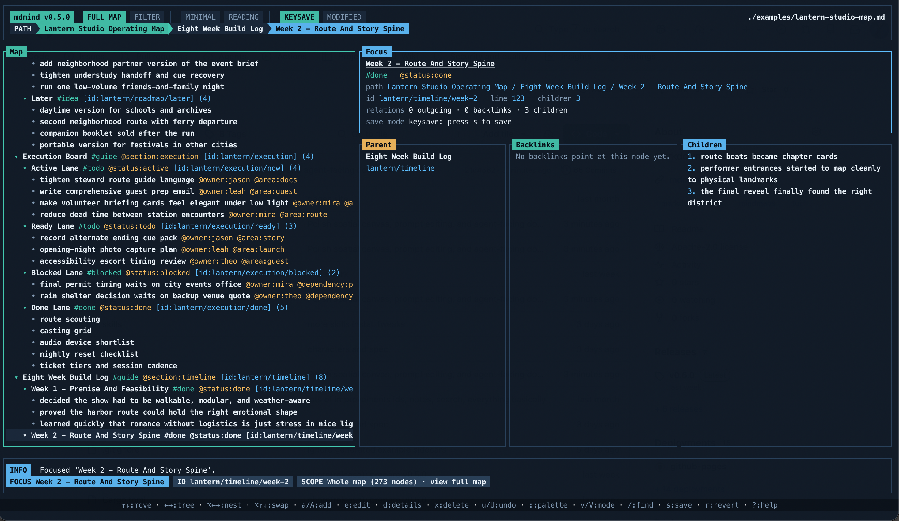
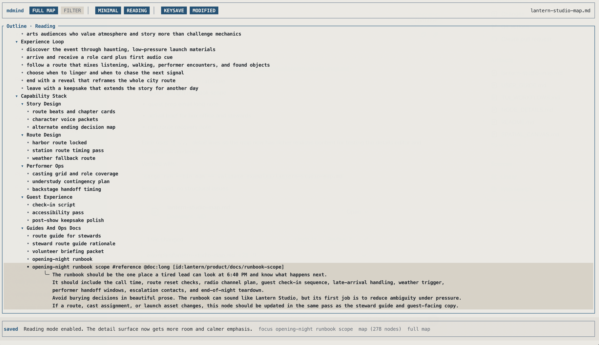
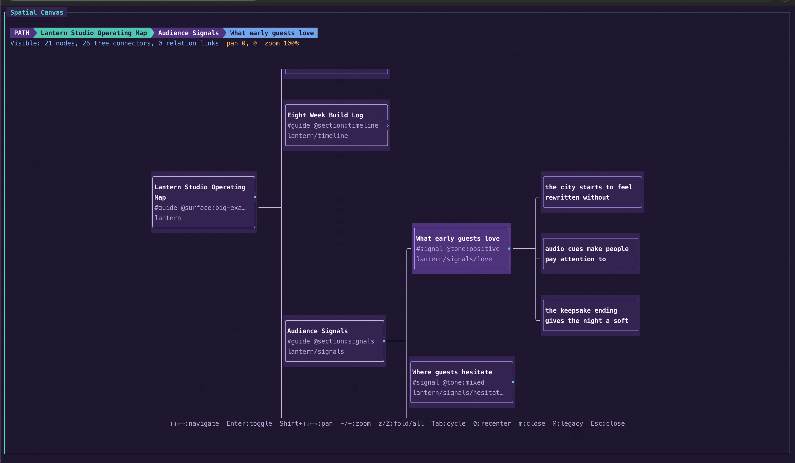

Your notes need shape, not another database.
Keep hierarchy, tags, ids, metadata, details, and links in a small plain-text vocabulary.
mdmind is a local-first map editor for writers, researchers,
planners, and agents who want durable structure without locking ideas inside a
proprietary app. Write maps as readable Markdown, explore them in the full-screen
TUI, then use the mdm CLI to validate, search, export, and inspect them.
brew tap dudash/tap; brew install mdmind



mdmind is for notes, plans, brainstorms, and research that need branches, relationships, and room to grow beyond a flat document.
Keep hierarchy, tags, ids, metadata, details, and links in a small plain-text vocabulary.
Switch views, jump by section, and inspect backlinks while the source stays one map.
Break messy questions into branches, compare paths, and keep the reasoning visible as a problem turns into smaller decisions.
Use #tags for grouping, @key:value for structure,
[id:...] for stable deep links, [[target]] for references,
and | details for longer notes attached to a branch.
Work in Full Map, Focus Branch, Subtree Only, or Filtered Focus, jump by major branch through the command palette’s section index, and move through lateral structure with outgoing links and backlinks.
Search by text, browse tags and metadata, validate structure, export views,
and reopen saved working sets with mdm.
mdmind gives agents a small, explicit vocabulary for hierarchy, details, ids, tags, and cross-links. You can also install mdmind skills for Codex, Claude, Cursor, and similar agents so generated maps open cleanly and use the format on purpose. Install the skill pack.
One file can act like an outline, a focused workspace, a reading surface, or a spatial canvas depending on the work in front of you.
GitHub Releases are the source of truth for public installs. Every release bundles both
mdm and mdmind, plus the example map pack.
The cleanest public install path on macOS.
brew tap dudash/tap
brew install mdmindDownload the latest archive from the GitHub release page and put the binaries on your path.
Open latest releaseGrab the latest Windows zip from GitHub releases and extract both binaries together.
Open latest releaseFor local development or testing directly from the repo:
cargo install --path .
Teach your coding agents to write native mdmind maps and inspect them with mdm.
Clone the repo once, then install the skill pack for one project or for all your work.
Some agents use their own paths, so check the full notes.
mdmind-map-authoring teaches agents to write clean native maps.
mdm-cli-inspection teaches them to validate, inspect, and export existing maps.
git clone https://github.com/dudash/mdmind ~/mdmindCopy the skill folders into the project Agent Skills directory so each repo can customize its own mdmind behavior.
mkdir -p .agents/skills
cp -R ~/mdmind/skills/mdmind-map-authoring .agents/skills/
cp -R ~/mdmind/skills/mdm-cli-inspection .agents/skills/Copy the skill folders into your user-level Agent Skills directory.
mkdir -p ~/.agents/skills
cp -R ~/mdmind/skills/mdmind-map-authoring ~/.agents/skills/
cp -R ~/mdmind/skills/mdm-cli-inspection ~/.agents/skills/The repo includes a portable skills README, agent-specific install paths, example prompts, customization notes, and a compact AGENTS.md snippet.
Open the skills README Open agent install notes